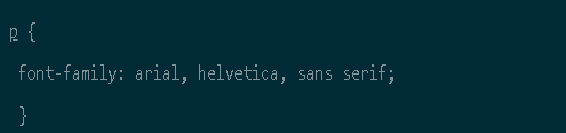
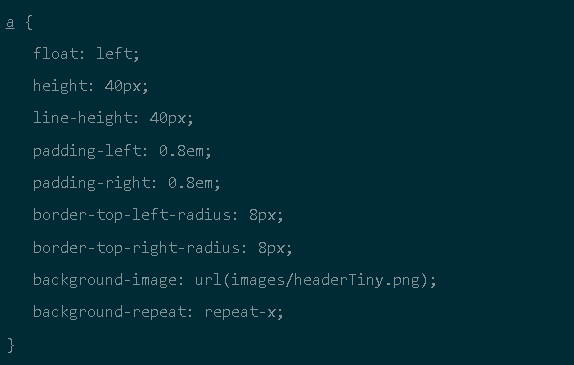

Информация
Что такое HTML

Что такое CSS

Пройти тест

Учимся верстать: что такое CSS
CSS (Cascading Style Sheets, каскадные таблицы стилей) — язык описания внешнего вида HTML-документа. Это одна из базовых технологий в современном интернете. Практически ни один сайт не обходится без CSS, поэтому HTML и CSS действуют в единой связке.
Каскадные таблицы стилей работают с HTML, но это совершенно другой язык. HTML структурирует документ и упорядочивает информацию, а CSS взаимодействует с браузером, чтобы придать документу оформление.
Для чего нужна каскадная таблица стилей
Вспомним, как все начиналось. Первая версия стандарта CSS опубликована 17 декабря 1996 года. Основной посыл — добавить оформление документа без программирования или сложной логики. Оформление — это цвета, шрифты, расположение отдельных блоков на странице и т.д.
В таблице стилей мы прописываем стили (правила) оформления. Каждое правило состоит из селектора и блока объявлений. Селектор определяет, на какие части документа распространяется правило. Блок объявлений помещается в фигурные скобки и состоит из одного или более объявлений, разделенных точкой с запятой. На самом деле это очень просто. Вот как выглядит простейшее правило с двумя свойствами для двух селекторов в таблице стилей:
Например, для назначения шрифта абзацу (HTML-элементу p) пишем такое правило:
Оно указывает использовать в абзацах данной веб-страницы шрифт Arial. Если он недоступен — использовать следующий по списку (Helvetica или Sans Serif).
А вот правило CSS, которое создает скругленные углы для картинки headerTiny.png.
Таблицу стилей можно хранить в отдельном файле .css и применять для многих страниц. Или прописать стили конкретно в коде HTML-страницы, обрамив тегами <style>.
Что делаеть же CSS
Как видите, CSS просто указывает стиль оформления для элементов HTML и всего документа в целом. Это поля, особые шрифты для заголовка, подзаголовков и основного текста, цвет фона и так далее. Непросто подобрать все эти значения, чтобы было красиво. Но зато здесь открывается простор для творчества.
Сам язык CSS очень простой. Точнее, он был достаточно прост в начале. Предполагалось, что владелец существующего сайта просто подключит стиль — и получит «конфетку» HTML+CSS с красивым оформлением. Затем при необходимости легко и быстро изменит оформление сайта, немного отредактировав файл CSS. Но потом начались сложности.